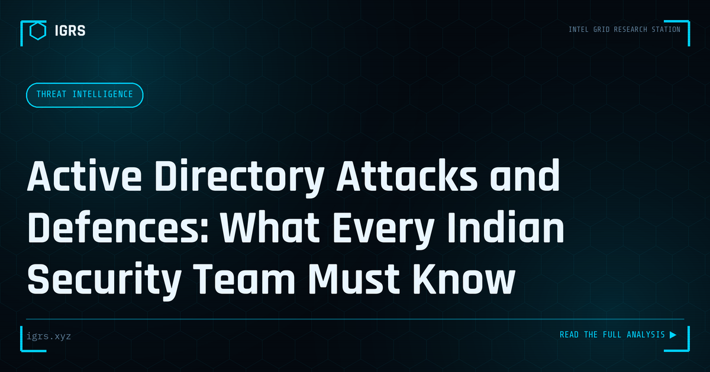

Active Directory Attacks and Defences: What Every Indian Security Team Must Know
| File No. | IGRS-060/2026 |
| Subject | Common Active Directory attack patterns, detection methods, and priority hardening steps for Indian organizations |
| Category | Threat Intelligence |
| Author | Manuj Kumar Pandey |
| Published | 2026-06-04 |
| Reading time | 12 minutes |
Active Directory is the authentication backbone of most Indian enterprise environments — and the primary target of attackers who have established a foothold. The most important attacks and how to defend.
Active Directory: The Crown Jewel Attackers Target
Active Directory (AD) is the identity backbone of most enterprise networks, controlling authentication and authorisation across the organisation. This central role makes it the prime target for attackers — compromising AD often means controlling the entire network. Understanding AD attacks and defences is essential for security professionals. This guide covers the major attack techniques and how to defend against them.
Why Active Directory Is a Target
Active Directory holds the keys to the kingdom: user accounts, group memberships, access permissions, and authentication for the entire domain. An attacker who gains domain admin privileges effectively controls every system and account. This concentration of control makes AD the focal point of most enterprise attacks, with adversaries methodically working toward domain dominance.
Common Active Directory Attacks
| Attack | Technique |
|---|---|
| Kerberoasting | Extract and crack service account passwords |
| Pass-the-Hash | Authenticate using stolen password hashes |
| Pass-the-Ticket | Reuse stolen Kerberos tickets |
| Golden Ticket | Forge tickets using the KRBTGT hash |
| DCSync | Impersonate a DC to extract credentials |
| LDAP enumeration | Map the AD structure for targets |
Kerberoasting Explained
Kerberoasting is among the most common AD attacks. It exploits the Kerberos protocol: any authenticated user can request a service ticket for accounts with a Service Principal Name (SPN), and that ticket is encrypted with the service account's password hash. The attacker extracts these tickets and cracks them offline to recover service account passwords — which are often weak and over-privileged. Defending requires strong, long service account passwords and managed service accounts.
Credential Theft Techniques
Pass-the-Hash and Pass-the-Ticket exploit how Windows authentication works. Rather than cracking passwords, attackers steal the hash or Kerberos ticket and reuse it directly to authenticate. These techniques enable lateral movement across the network using harvested credentials. Mitigations include credential guard, restricting privileged account usage, and limiting where high-privilege accounts log in.
The Golden Ticket Attack
A Golden Ticket is among the most severe AD compromises. By obtaining the KRBTGT account hash, an attacker can forge Kerberos tickets for any user, including domain admins, granting persistent, near-undetectable access. Recovering from a Golden Ticket attack requires rotating the KRBTGT password twice. This devastating attack underscores why protecting domain controllers and the KRBTGT account is paramount.
BloodHound: Mapping Attack Paths
BloodHound is a tool that maps relationships in Active Directory to reveal attack paths — chains of permissions and group memberships that lead from a low-privilege foothold to domain admin. Attackers use it to find the shortest path to domination; defenders use it to identify and close those paths. Understanding your own AD attack paths through BloodHound is a powerful defensive practice.
Detecting Active Directory Attacks
Detection focuses on key Windows event logs and behaviours:
- Event 4769 — Kerberos ticket requests (abnormal patterns suggest Kerberoasting)
- Event 4624/4625 — logons and failed logons
- Event 4728/4732 — privileged group membership changes
- DCSync detection — unexpected replication requests
- Anomalous ticket lifetimes — indicators of forged tickets
Defending Active Directory
| Defence | Protects Against |
|---|---|
| Tiered administration | Credential theft escalation |
| Strong service passwords | Kerberoasting |
| LAPS | Local admin reuse |
| MFA | Credential-based access |
| Privileged Access Workstations | Admin credential exposure |
The Tiered Administration Model
A foundational AD defence is tiered administration, which separates accounts and systems into tiers — domain controllers and domain admins (Tier 0), servers (Tier 1), and workstations (Tier 2) — and prevents high-tier credentials from being exposed on lower-tier systems. This containment stops attackers from harvesting domain admin credentials from a compromised workstation, breaking the escalation path that most attacks rely on.
Continuous AD Security Assessment
Active Directory security is not a one-time configuration but a continuous practice. Regular assessment using tools like BloodHound and PingCastle identifies attack paths, misconfigurations, and risky permissions. Auditing privileged group memberships, reviewing service accounts, and monitoring for attack indicators maintain security as the environment evolves. For organisations, treating AD as the critical asset it is — with the monitoring, hardening, and assessment that importance demands — is the foundation of enterprise security against the attacks that inevitably target this crown jewel.